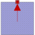
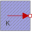
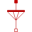

PartialThermalAmbientInductionMachinesPartial thermal ambient for induction machines |

|
Diagram
{kind=link}
Information
This information is part of the Modelica Standard Library maintained by the Modelica Association.
Partial thermal ambient for induction machinesParameters (2)
| useTemperatureInputs |
Value: false Type: Boolean Description: If true, temperature inputs are used; else, temperatures are constant |
|---|---|
| Ts |
Value: Type: Temperature (K) Description: Temperature of stator windings |
Outputs (5)
| Q_flowStatorWinding |
Default Value: temperatureStatorWinding.port.Q_flow Type: HeatFlowRate (W) Description: Heat flow rate of stator windings |
|---|---|
| Q_flowStatorCore |
Default Value: temperatureStatorCore.port.Q_flow Type: HeatFlowRate (W) Description: Heat flow rate of stator core losses |
| Q_flowRotorCore |
Default Value: temperatureRotorCore.port.Q_flow Type: HeatFlowRate (W) Description: Heat flow rate of stator core losses |
| Q_flowStrayLoad |
Default Value: temperatureStrayLoad.port.Q_flow Type: HeatFlowRate (W) Description: Heat flow rate of stray load losses |
| Q_flowFriction |
Default Value: temperatureFriction.port.Q_flow Type: HeatFlowRate (W) Description: Heat flow rate of friction losses |
Connectors (2)
| thermalPort | ||
|---|---|---|
| TStatorWinding |
Type: RealInput Description: Temperature of stator windings |
Components (7)
| temperatureStatorWinding |
Type: PrescribedTemperature |
|
|---|---|---|
|  | temperatureStatorCore |
Type: FixedTemperature |
| temperatureRotorCore |
Type: FixedTemperature |
|
| temperatureStrayLoad |
Type: FixedTemperature |
|
| temperatureFriction |
Type: FixedTemperature |
|
| constTs |
Type: Constant |
|
|  | thermalCollectorStator |
Type: ThermalCollector |
Used in Components (3)
|
Modelica.Electrical.Machines.Interfaces
Partial model for induction machine |
|
|
Modelica.Magnetic.FundamentalWave.Interfaces
Partial model for induction machine |
|
|
Modelica.Magnetic.QuasiStatic.FundamentalWave.BasicMachines.BaseClasses
Partial model for quasi static multi phase machines |
Extended by (5)
|
Modelica.Electrical.Machines.Thermal.SynchronousInductionMachines
Thermal ambient for synchronous induction machine with reluctance rotor |
|
|
Modelica.Electrical.Machines.Thermal.SynchronousInductionMachines
Thermal ambient for synchronous induction machine with electrical excitation |
|
|
Modelica.Electrical.Machines.Thermal.SynchronousInductionMachines
Thermal ambient for synchronous induction machine with permanent magnets |
|
|
Modelica.Electrical.Machines.Thermal.AsynchronousInductionMachines
Thermal ambient for asynchronous induction machine with slipring |
|
|
Modelica.Electrical.Machines.Thermal.AsynchronousInductionMachines
Thermal ambient for asynchronous induction machine with squirrel cage |